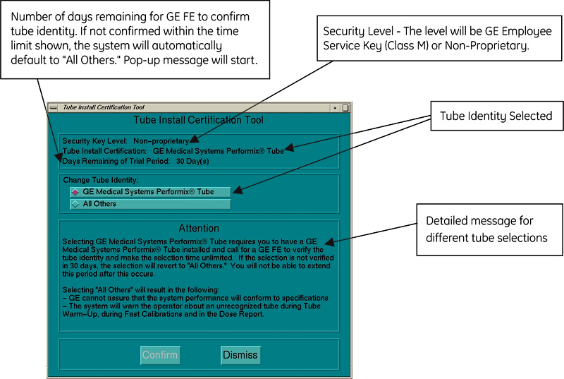
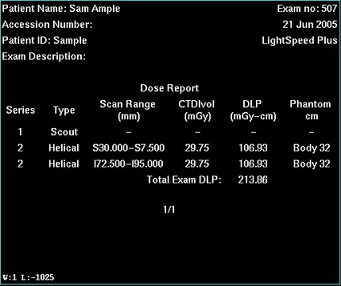
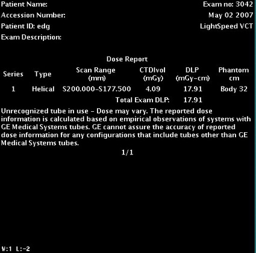

Operating Documentation
Direction 5193574-800, Rev# 22
LightSpeed 7.X Service Methods
Module Version 2.0, Version Date 5/3/07
Operating Documentation |
| Last Revised on: | 3 May, 2007 |
The following are example screens from the Tube Install Certification Tool.
Illustration 1: Example of Tube Install Certification Tool

Illustration 2: Message at each boot up when Unrecognized X-Ray Tube is installed in System

Illustration 3: Message at each boot up when GE Tube is selected but not verified by GE Field Engineer

Illustration 4: Dose Report Screen when GE Medical Systems X-Ray Tube is installed in System (Example Shown)

Illustration 5: Dose Report Screen when Unrecognized X-Ray Tube is installed in System (Example Shown)
